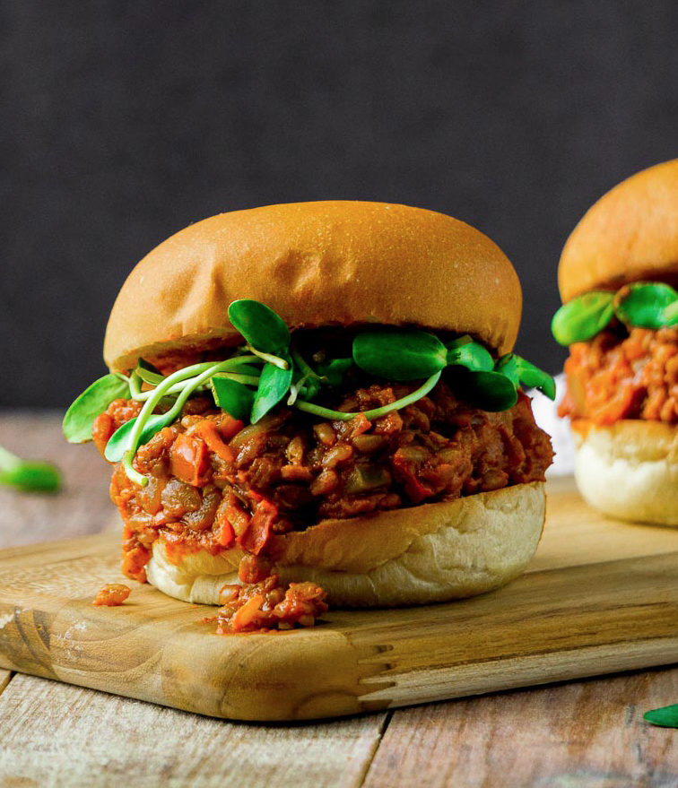

Sloppy Joes

Description
This version of Sloppy Joes ups the nutrition ante by swapping the meat for lentils, and adding in extra veggies. Adjust this recipe to how you prefer your Sloppy Joes--make them sweeter with additional molasses, spicier with additional chili powder, or tangier with additional mustard. Serve warm, with your favorite rolls or buns, and top with sliced red onion and fresh spinach or lettuce, if desired
Ingridients
i need vegetable,onion,carrot,pepper,garlic, chili powde,cumin, paprika,tomato paste,water,tomatoes,red lentils, molasses, Worcestershire sauce,yellow mustard,apple cider vinegar, kosher salt, hamburger buns and split
- 1 tablespoon vegetable oil
- 1 large onion, chopped
- 1 large carrot, peeled and chopped
- 1 green bell pepper, chopped
- 3 cloves garlic, minced
- 1½ teaspoons chili powder
- 1 teaspoon ground cumin
- 1 teaspoon paprika
- 1 teaspoon onion powder
- 1 teaspoon garlic powder
- ½ teaspoon freshly ground black pepper, or to taste
- 4 tablespoons tomato paste
- 2 cups water
- 1 (14.5 ounce) can no-salt-added diced tomatoes
- 1 cup red lentils, rinsed and drained
- 2 tablespoons molasses, or more to taste
- 1 tablespoon Worcestershire sauce
- 1 teaspoon prepared yellow mustard
- 1 teaspoon apple cider vinegar
- ¾ teaspoon kosher salt, or to taste
- 6 medium hamburger buns, split